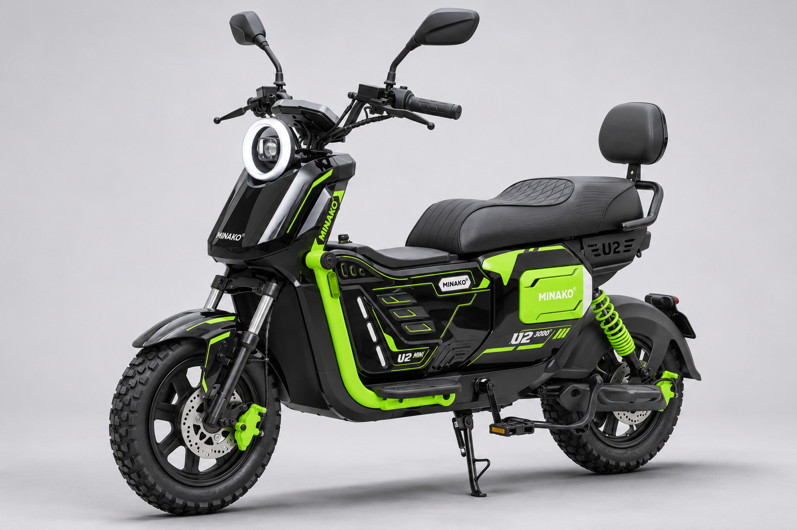
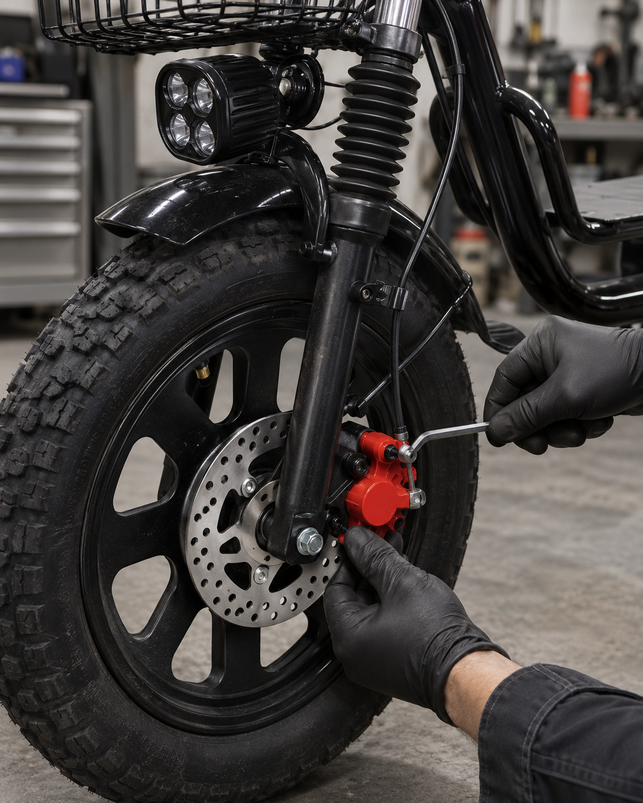
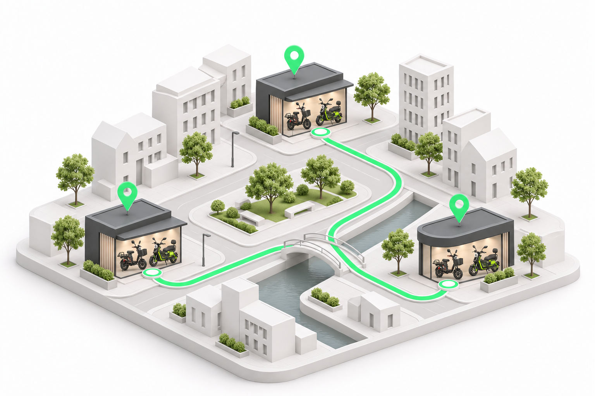

Ваш прокат.
Под контролем.
Аренды, велосипеды и команда
в одной системе

Меньше разрозненных процессов
Больше внимания работе и развитию проката
Рабочий день
в одном окне
Понятно, что выдано,
что возвращается
и что готово к аренде.
Аренды
Бронирование → выдача → продление → возврат
Велосипеды
Доступность и техническое состояние
Расчёты
Срок аренды и неоплаченный остаток

Команда видит
ход ремонта
Менеджер фиксирует неисправность. Механик ведёт работу до приёмки.
Запчасти без потерянных заявок
Механик → ответственный за закупку
Заказ → получение → установка
Контроль после
выдачи
Проверено на тестовом велосипеде
Координаты, состояние, блокировка и разблокировка через сервис мониторинга
Следующий шаг
Карта и ручное управление в CRM. Автоблокировка при долге — по правилам проката.
Нужны совместимый GPS-модуль и проверка установки. Команды из CRM пока не включены; безопасные условия блокировки предстоит согласовать.
Бизнес растёт.
Порядок остаётся.
Другой район или другой город — отдельный филиал в одном кабинете.

Каждая точка отдельно
Свой парк и сотрудники
Владелец видит всё
Переключение филиалов и общий обзор
Курьер
на связи
Уже в тестовой версии
- Своя аренда и расчёты
- Запрос на продление
- Сообщение о поломке
- Ответ менеджера
Оплата —
следующий шаг
Онлайн-оплата и автосписания
С согласия клиента и через поддерживаемый платёжный сервис
Схема подключения зависит от статуса арендодателя и расчётов с курьерами.
Данные для
решений
По каждой точке
и всему прокату
Аренды
Загрузка и продления
Велосипеды
Использование и простои
Ремонты
История и сроки работ
Клиенты
Повторные обращения
Обсудим ваш прокат
Напишите в чат, где получили презентацию